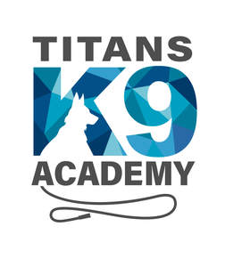

Trade Mark Journal No.2025/013 28 March 2025
UK00004163192 20 February 2025 (9,16,18,25,28,31,41,44)

- Class 9
- Dog whistles.
- Class 16
- Training manuals.
- Class 18
- Dog collars; Dog leashes; Dog clothing; Dog apparel; Dog coats; Raincoats for pet dogs; Dog leads.
- Class 25
- Training shoes; Training suits; Uniforms; Tracksuits; Jackets [clothing]; Gloves for apparel; Embroidered clothing; Gloves [clothing]; Short-sleeved T-shirts; Long-sleeved shirts; Belts [clothing]; Belts for clothing; Men's and women's jackets, coats, trousers, vests; Baseball caps and hats; T-shirts; Tee-shirts; Clothes.
- Class 28
- Dog toys; Toy whistles; Whistles [toys]; Toys for dogs; Imitation bones being toys for dogs; Whistling toys; Toys for pet animals; Pet toys; Pet toys made of rope.
- Class 31
- Dog food; Dog foods; Pet food for dogs; Dog biscuits.
- Class 41
- Training in dog handling; Animal training; Training (Animal -); Training; Obedience training for animals; Training of animals; Obedience school training for animals; Tuition in animal training; Services for animal training; Training courses; Business training; Education and training; Training services; Teacher training services; Training related to nutrition; Providing of training; Providing training; Providing of training in the field of health care and nutrition.
- Class 44
- Breeding of dogs.
TEACHERS PET K9 TRAINING LTD